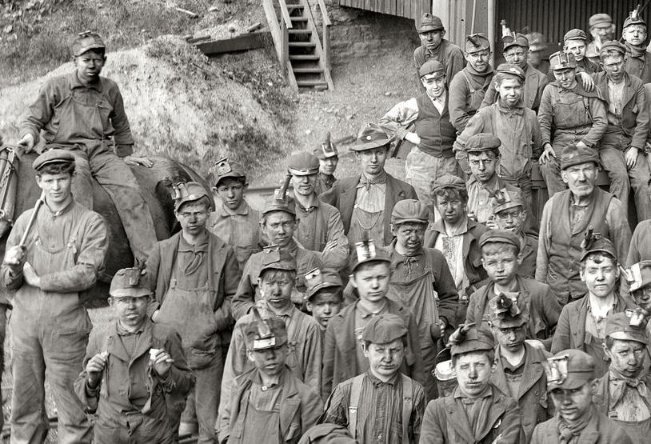

Ditch Diggers Local 357 was founded in 1944 by Grover Growley. Mr. Growley believed strongly in the abilities collective bargaining and the unstoppably yonnic power of the void. In 2003, however we're a little modern holding events and giving a path to sustainable employment through a robust apprenticeship program.